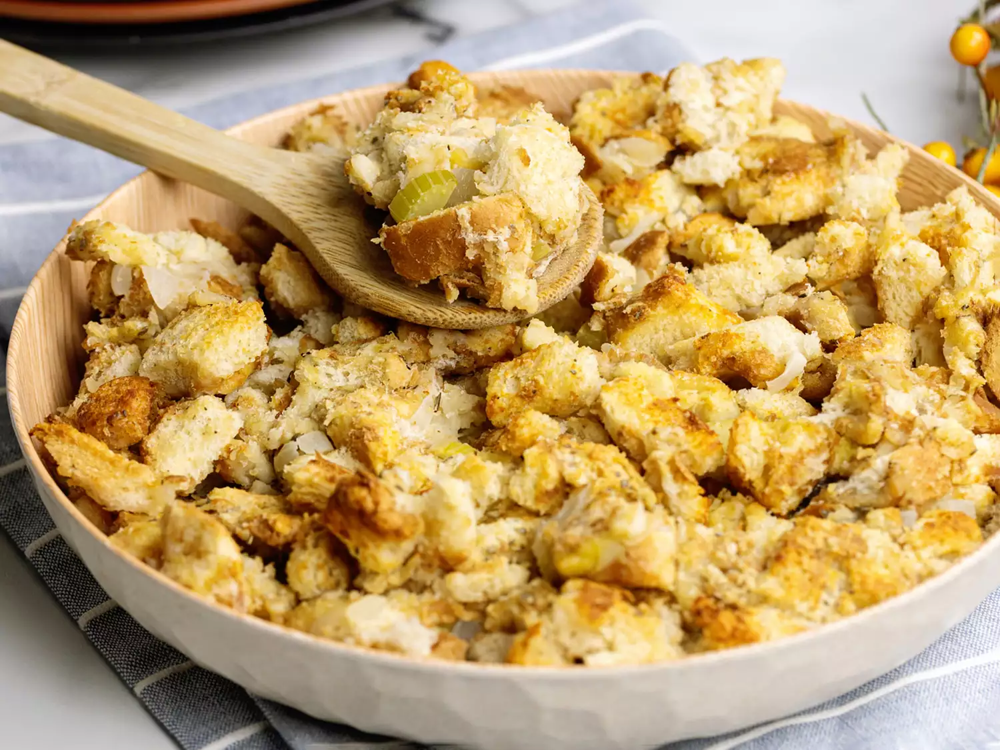

Stuffing

Description
This chicken stuffing was passed down from the men and women in my family. I remember it as a coming of age to be called into the kitchen by an aunt, uncle, father, cousin
or older sibling. They wouldn't even say a word, just gesture for you to step onto teh ladder and hand you a dish. You knew it was happening because you'd start shaking
and your mind would be filled with questions, but you'd be too scared to ask.
Ingredients
The ingredients for this recipe are simple. 9 times out of 10 you are likely to have all the ingredients and don't need to leave home and rush against all late Thanksgiving shoppers
to make this delectable meal.
- Bread (I use honey wheat but white is just fine
- 1/2 stick butter
- 1 chopped onion
- 2 stalks chopped celery
- 1/2 cup chicken broth
- 2 lightly beaten eggs (I use large)
- 1/2 tsp salt
- 1 tbsp onion powder
- 1 tbsp garlic powder
- 1 tsp paprika
- 1/2 tsp parsley flakes
- 1/2 tsp basil leaves
- (Optional) 1/4 cup of water (for consistency, but more often than not the chicken broth alone is fine)
Steps
- Preheat Oven: Preheat your oven to 350 F.
- Make Bread Crumbs: Toast the bread slices for desired time then spread the pieces of toast onto baking sheets. Wait 24 hours at room temperature
for them to harden. Afterwards crush the slices with a rolling pin and transfer the crumbs to a large bowl.
- Cook vegetables: Melt 1/2 stick of butter in a saucepan and add the chopped onion and celery. Stir often and cook till both are soft. Remove from the heat and drain.
- Mix ingredients: Add the chicken broth and eggs to the bread crumbs. Stir until moist. Afterwards add the cooked vegetables and season to taste.
- Bake stuffing: Pour the mixture into a greased baking dish and bake until brown and crisp.